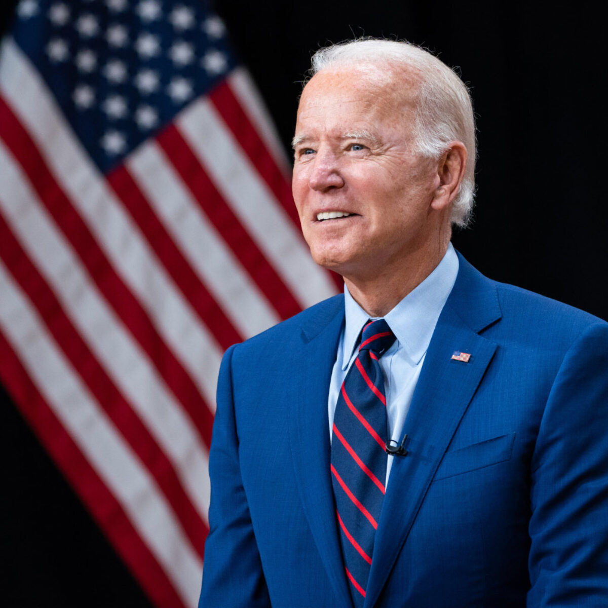

President Joe Bidensaid Tuesday he supports efforts to reform the Senate’s filibuster rules, a move that could help get his legislative agenda back on track.
Under its current iteration, the procedural rule requires 60 votes for most important measures to pass in the Senate. Biden, however, said he thinks the rules should be changed to require lawmakers to talk on the Senate floor in order to delay a bill’s passage — a rule known as the “talking filibuster” — which was the policy when Biden joined the Senate in 1973.
“It’s getting to the point where, you know, democracy is having a hard time functioning,” he said in an interview with ABC News’ George Stephanopoulos.
Though some Democrats have pressed for the Senate to eliminate the filibuster all together, requiring only simple majority votes, Biden has been reluctant to embrace such reform efforts. Earlier Tuesday, White House press secretary Jen Psaki said the president’s “preference” was “not to make changes.”
But when asked by Stephanopoulos about his thoughts on changing the rules, Biden said he backs a return to the old Senate procedures.
“I don’t think that you have to eliminate the filibuster, you have to do what it used to be when I first got to the Senate back in the old days,” Biden said. “You had to stand up and command the floor. You had to keep talking.”
“So you’re for that reform?” Stephanopoulos asked. “You’re for bringing back the talking filibuster?”
“I am,” Biden said. “That’s what it was supposed to be.”
Biden’s remarks came just days after he signed the COVID-19 relief package into law. That legislation passed in the Senate by a 50-49 vote after Democrats used a process called budget reconciliation in which fiscal bills can be passed by a simple majority.
But without filibuster reform, Biden would need to court 10 Republican senators to pass the non-budgetary legislation he proposed during his presidential campaign, including climate action, immigration reform, gun control, voting rights reforms and infrastructure projects. Given the current 50-50 split in the Senate, convincing 10 Republicans to vote with the Democrats would be an extremely difficult if not impossible task on most of these issues.
Democrats would need 51 votes to change the filibuster rules. Though many in the party, including Senate Democratic Whip Dick Durbin (D-Ill.), have recently expressed support for reform, ending the procedure altogether is a non-starter for moderate Democrats like West Virginia’s Joe Manchin and Arizona’s Kyrsten Sinema.
Biden’s proposed revival of the talking filibuster could prove more persuasive to that faction of the party.
For example, Manchin said earlier this month he is open to some degree of filibuster reform.
“If you want to make it a little bit more painful, make him stand there and talk. I’m willing to look at any way we can,” Manchin told NBC News’ Chuck Todd. “But I’m not willing to take away the involvement of the minority.”
Meanwhile, Senate Republicans have strongly signaled their opposition to changing the rules. On Tuesday, Senate Minority Leader Mitch McConnell (R-Ky.) threatened a “scorched earth” response if Democrats ended the filibuster, pledging to turn the legislative process into a “100-car pileup.”
Biden Says He Supports Senate Filibuster Reform
The president told ABC he is in favor of changing the rules to require senators to talk on the floor to delay a bill's passage.
